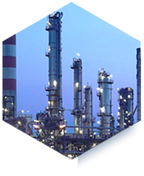

Сосуды и аппараты емкостные
Сосуды и аппараты емкостные, работающие под давлением не более 16 МПа или без избыточного давления при температуре стенки не ниже минус 70 °С, применяются для эмульгирования, суспензирования, гомогенизации, интенсификации теплообмена, массообмена, проведения химических реакций и других технологических процессов, использующихся на предприятиях нефтеперерабатывающей, нефтехимической, химической, газовой и других отраслей.
Сосуды и аппараты всех типов и исполнений могут оборудоваться наружными или внутренними теплообменными устройствами, в том числе системой электрообогрева. В конструкции аппаратов допускается применение барботеров, каплеуловителей, коалесцеров и других необходимых для работы внутренних и наружных устройств.
